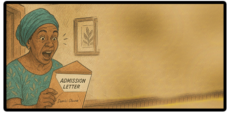

Sometimes, the future knocks quietly other times, it shouts your name through the voice of a mother who’s held on through grief and grace. For her daughter Dami, this letter wasn’t just about admission—it was about affirmation. It was proof that dreams can still bloom even in the soil of sorrow. And today, that dream arrives, wrapped in an envelope and sealed with hope.

“Dami!” her mother’s voice rang from the hallway, excitement trembling in her tone. “I just received your admission letter from the mail lady!”
Dami practically flew down the stairs, her heart thumping with anticipation. “Wasn’t it delayed?” she asked, breathless.Her mother held up the crisp envelope, smiling despite the tears forming in her eyes. “I said, I just received your admission letter.”
Dami gasped. “Oh my God! Finally!” Her eyes sparkled as she took the letter from her mother’s hand. “At last, Mom. I can’t wait to get to school and experience what it’s like to be lectured. Thank you, Jesus... Delay is not denial.”
Her mother nodded, holding back her emotions. “You’re right, my gold. But please—stay the girl you’ve always been. You're all I have left... after your father...” Her voice broke.
Dami stepped forward, gently holding her mother’s hand. “Mom,” she whispered, “let Dad’s soul rest. No tears, please. He’d want us to smile.”
Her mother wiped her tears. “Oh, yes... you’re right,” she murmured with a small smile.
“So,” Dami began playfully, “when do I resume? I need to do just a bit of shopping.” Her mother raised a brow. “Shopping? Was it not just two weeks ago you and your friends bought half the market?”
Dami burst into laughter. “Mom, I was joking! But you know you’ve got the money—so why not enjoy it?”
They both laughed, the kind of laughter that softened sorrow and brought peace.“So, I’m stingy, abi?” her mom teased. “Okay o, I will spend all the money I have. And when we become short of money, we’ll open our mouths to the sky?”
She continued with mock seriousness, “Like I always say... saving is—”
Dami cut in, “The key. So we can have something to fall back on. Yeah, I got it. No repetition.”
“See your head.” Her mom smiled and tapped Dami lightly on the head.
“Ouch, Mom!” Dami said, smiling.
She sniffed and asked, “Mom, did you put something on?”
“Yehhh!” her mom shouted and ran to the kitchen.
Dami chased after her, laughing. “Ha! Mum, it’s now your turn!”
Her mom smiled. “That’s your business. Besides, your last sentence was wrong. It’s Mom, are you cooking? Not Mom, did you put something on fire, Miss Script Writer.”
“Yes, Mom,” Dami replied just as her phone rang. “Hello?” she said, stepping out of the kitchen.
“Hey baby girl, what’s up now?” a voice said from the other end.
“I’m good, and you? This one you called am I safe?” Dami asked playfully.
“You’re safe,” the friend laughed. “I just received my admission letter, and I’m resuming in two weeks.”
“Yeah, just received mine too. I’m resuming...” Dami checked the letter. “In three weeks’ time. Hold on a sec— is it the same school as mine?!Yeah, same as yours,” the woman on the phone said, “but I’m studying Law.”
“Oh my gosh!” Dami exclaimed excitedly. “That’s good. I’m studying Mass Communication.”
“Yeah, I know,” Lizzy replied in a quiet whisper.
“Hey, Lizzy, what’s wrong? Why is your voice so quiet?” Dami asked, concerned.
“Gosh,” Lizzy sighed. “You know I don’t like Law, but my dad! He insisted on it. And my mom isn’t doing anything to change his mind... it’s breaking me.”
“Hey babe, no worries,” Dami comforted her. “Please. Besides, Law is a good course, and Dad wants the best for you. You know your dad is strong—he’s a disciplinarian. You can’t change his mind easily. But maybe if you prove to him that you really want to study Creative Arts, he might change his mind.”
“Don’t talk as if you don’t know Dad well!” Lizzy scoffed, then giggled. “But it wouldn’t be bad because we’ll be in the same room!”
“What did you say? We’re staying together?” Dami squealed with excitement. “Oh my gosh! I would love that! So, what did your mom say about it?”
“Oh, what do you want her to say?” Lizzy replied. “Besides, my dad has already gone shopping for me.”
Why would he do that? Is he trying to impress you or something?” Dami asked, raising a brow as she settled deeper into her couch.
Lizzy chuckled on the other end of the call. “Oh, please! He just asked me to cook. He went shopping because Mom traveled to Dubai last night. That’s all.”
Dami laughed. “Good Chef Lizzy, huh?” She was still smiling when a voice echoed from downstairs.
“Dami, come here!”
Lizzy paused, frowning. “Who just yelled your name?”
“Who else if not Maale?” Dami sighed. “Well, I have to go now. Don’t forget—we have that group video call tonight.”
“I won’t,” Lizzy assured. “I’ll remind Vanessa though. You know how forgetful she is.”
Dami shook her head, already standing. “You don’t have to tell me that. I know her too well. Alright, bye!”
“Bye!” Lizzy smiled and ended the call. Lizzy’s dad stepped into the house, a shopping bag in each hand. “Really? Not stressful?” he teased as he set the bags down. “I should’ve been the one cooking while you did the shopping. Anyway, I got everything on your list—except one. That last one was ridiculously expensive.”
Lizzy chuckled as she took the bags. “Wow! Since when did anything become too expensive for my dad?” She flashed a playful grin.
Her father sighed, dropping onto the couch. “Oh, so you’ve not noticed how things have skyrocketed in this country? You don’t know anything yet, my dear. Anyway, your mom called. She said she’ll be back next week and wants to know if you or Dami need anything. And she’s been trying to reach you—where on earth did you leave your phone, Miss Chef?”
Lizzy laughed softly. “One word at a time, Dad! You’re the one who banned phones in the kitchen, remember? I left it on the table. I’ll ask Dami if she needs anything, but I doubt she will. She’s not the materialistic type.”
Her dad raised an eyebrow. “Hmm. Speaking of which, is my food ready? I’m starving here.”
Lizzy froze slightly, feigning guilt. “Ehmm… about that. I forgot to cook. I got caught up with something else. Sorry, let me quickly get to it—”
“Come back here!” her dad’s voice rose sharply. “What have you been doing for the past two hours? How old are you again? Girls your age are already managing their homes and husbands, and you can’t even manage your father’s meal?”
Lizzy raised her hands. “C’mon, Dad, be calming down. Can’t I crack a joke without you taking it to heart?” She smiled cheekily. “Your food’s in the kitchen already—no meat, though.” She darted upstairs with her shopping bags before he could respond.
Her father grunted, rising from the sofa. “Lizzy!” he bellowed as he approached the dining area. “Come down here this instant!”
Lizzy groaned, clutching her head dramatically as she came back down. “Yes, sir?”
“Won’t you serve me the food? Is this how you’ll leave your husband to serve himself?”
“Oh, my…” she mumbled, disappearing into the kitchen. Moments later, she returned with a tray. “Here you go. And Dad, can we please not talk about husbands? It’s just… weird.”
He chuckled. “Just kidding. But you’ll have to get used to it. When you do get married, humility and respect are non-negotiable. Now, help me with my juice, please.”
Lizzy sighed but complied. “Alright…” She returned with the juice and placed it beside him. “I still need to prep for school, though. Oh! Before I forget—Dami is resuming in three weeks, so we’ll be sharing the apartment you rented for us.”
She paused and turned. “Dad… has anyone told you lately why I love you?”
He raised a brow, mid-chew. “Love? Why do you love me?”
Lizzy smiled, her tone suddenly soft. “Because you’re the best. Yeah, you drive me crazy sometimes… but the love you’ve shown me—it’s more than I could’ve ever imagined. I love you, Dad. And please, don’t call me again tonight—I need to pack.” She gave him a quick wave and disappeared upstairs.
Her father shook his head, a smile spreading across his face. “This girl won’t kill me…” he murmured. He looked toward the window and sighed. “I can’t wait for her brother to return.”
he sun had barely risen when Dami’s mother called her downstairs.
Dami ended her phone call abruptly, slipping her feet into her slippers. “Mom... I’m coming down now!” she called, hanging up and heading downstairs.
Her mother was seated in the living room, eyes calm but serious.
“Welcome,” she said, gesturing toward the seat opposite her. “Come and sit. We need to talk. You’re leaving in two days.”
Dami raised a brow. “Wait... that’s why you called my number? You could’ve just shouted my name or knocked on my door!” She chuckled, flopping onto the couch. “Anyway, I’m listening.”
“Thank you,” her mom said softly. “You know, you’re still young, Dami. You’re about to step out of this house, out from under my roof, into a world where every decision will be yours to make. I won’t always be there to guide you, and I don’t want you making choices that could scar you for life. Your future is what matters most to me.” Dami nodded, her expression growing serious. “I get it, Mom. And I promise I’ll be careful. But this face—” she motioned at her mother’s worried expression “—tells me there’s more. You can talk to me. You always say I’ve got the mindset of an adult, right? You raised me that way.”
Her mother let out a deep sigh. “You’re right,” she said, pausing. “Actually, this is about me. My past. Things I went through—things that nearly destroyed my life and my education. I don’t want you to be afraid when you see the signs in school. I want you to be prepared.”
Dami leaned forward. “Mom, you know me. I’m strong. As long as you’re with me, I can face anything. I may be seventeen, but I know how to handle things.”
Her mother smiled, warmth returning to her face. “You’re taking this more seriously than I expected. I haven’t seen this side of you in a while.”
Dami grinned. “It’s the pre-university glow-up, Mom.”
She chuckled. “Alright, you win. But before we begin—go grab some snacks. It’s story time.”
“Yesss!” Dami squealed, leaping up. “You know how much I love your stories!” She returned moments later with a plate of chin-chin and drinks. “So, what’s it about this time? A love story? A campus thriller? Tell me!”
Her mother leaned back. “You’ll have to find out yourself. Maybe it’s love. Maybe it’s something deeper. It’s about my university days—what I went through.”
Dami sat up eagerly. “I was born ready. Go ahead!”
Her mother smiled faintly. “Just know, this is a throwback. No too many interruptions, okay?”
Dami nodded eagerly. “Deal.”
And then… the room grew still.
A hush fell over the living room as the past began to unfold.
THROWBACK — WHEN DAMI’S MOM, TREASURE, WAS IN SCHOOL...
The campus theatre hall buzzed with voices, students scattered around in pockets of conversation. The air smelled of dust, cheap perfume, and unspoken stories. Treasure walked in, her backpack slung loosely on one shoulder, her poise elegant yet effortless.
“Hi guys,” she said, lowering herself onto the bench beside her friends. Her voice carried the cool confidence she was known for. “What’s up today?”
Daniella looked up from her phone, her brows furrowed. “Honestly, I’m not fine. I’ve been looking for Dante since yesterday. He’s been completely off the radar.”
David rolled his eyes dramatically. “Of course na, he went out with his babe. You should know by now.”
Daniella shot him a glare and pinched his arm. “Must you always talk like that? No filter?”
“Ouch!” David groaned, rubbing his arm. Then he leaned forward, lowering his voice like he was about to reveal a secret. “Treasure, let me just tell you—Dante said he’s not stepping into this rehearsal space again if you don’t show up for the end-of-year party.”